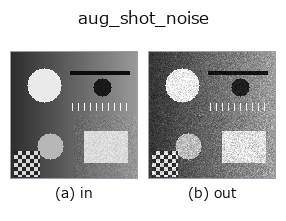

augmentation op• 数据种类:image → image
• 调用:fullseye.apply(img, "aug_shot_noise", a=0.5, b=0.5)(2-D 的模型是一张图 + 两个标量旋钮 a,b∈[0,1])

*图为在 128×128 合成输入上实际运行的输出。左为输入，右为输出。点云以俯视散点显示(亮度 = z)，一维序列为折线，体数据为沿 z 的最大值投影，视频为中间帧，复数图像为幅值；无法成像的返回值直接显示数值。*
扫描旋钮 a(0.1 / 0.5 / 0.9，另一旋钮取默认):
▸ aug_shot_noise: knob a sweep (docs site)
扫描旋钮 b(0.1 / 0.5 / 0.9，另一旋钮取默认):
▸ aug_shot_noise: knob b sweep (docs site)
换别的图像(合成场景 / 照片 / 硬币。上排为输入，下排为对应输出。旋钮取默认):
▸ aug_shot_noise: other inputs (docs site)
*第 4 列是彩色 (H,W,3) 输入。此算子能正确处理颜色而不跨通道(不把颜色通道当作第三个空间轴卷积)。*
光子（泊松）散粒噪声 —— 每个图像传感器固有的量子噪声底限。
> 以下的详细说明为原文 —— 摘要与标题已翻译。
The image is interpreted as a normalised photon rate, scaled by the photon
scale `K = 5 + 250*(1-a)`, sampled from a Poisson distribution and scaled
back: `Poisson(v*K)/K. High a` = few photons = very noisy
(SNR ~ sqrt(K); a=0 -> K=255 near-clean, a=1 -> K=5 photon-starved).
`b adds a small dark-current pedestal (0.05*b` in rate units) before
counting, so even a pure-black frame shows dark noise. The RNG is seeded from
(a, b) -> the realisation is fixed per knob setting.
• gallery2d_color_artistic 族使用指南
• 示例数据目录(下载 URL / 许可证) —— 2-D 用 skimage.data(BSD/公有领域)加合成图,3-D 给出真实数据源(Stanford/PDS 等)的下载 URL。
• 算子来历与参考文献 —— 该算子族所依据的研究/方法出处。
• 算法的正典(作者・年份)与用途见上面的族使用指南。
下面的程序已确认可以运行(与图相同的输入)。在 Studio 帮助中，此块会变成按钮，可当场加载并运行。
aug_shot_noise 0.50 0.50
▸ Load this pipeline · Load & run
• gallery2d_color_artistic — py -3.11 examples/gallery2d_color_artistic.py
• sim2real_and_alife — py -3.11 examples/sim2real_and_alife.py
image 作为输入)identity · gaussian · mean_box · bilateral · unsharp · median · min_filter · max_filter
augmentation)aug_read_noise · aug_fixed_pattern · aug_motion_blur · aug_vignette · aug_chromatic · aug_rolling_shutter · aug_jpeg_blocks · aug_cutout
*Provenance: ops.py — 2D 算子登记表。本条目由 tools/opdocs.py md 自动生成(请勿手工编辑)。*
© 2026 Kazufumi Furuse — Fullseye operator documentation. Licensed under Apache-2.0.
{kind=link}
{kind=link}
{kind=link}